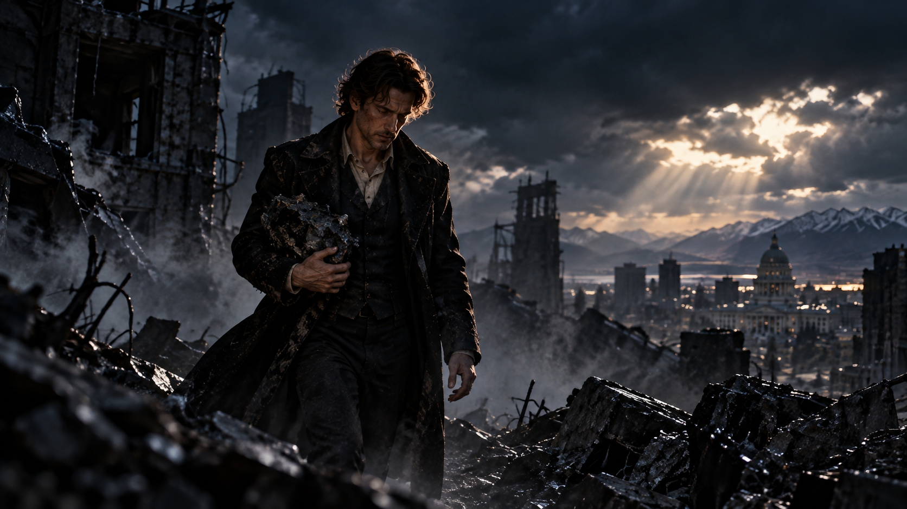
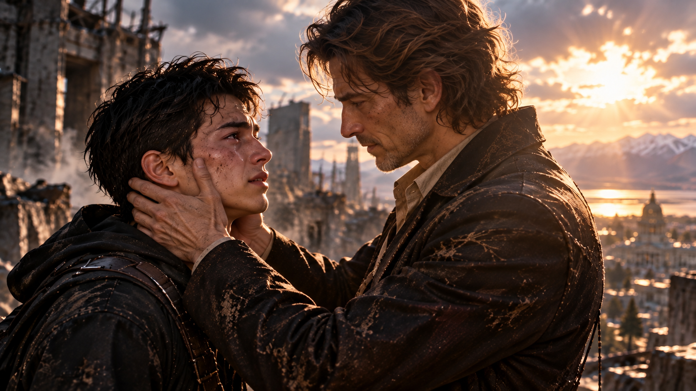
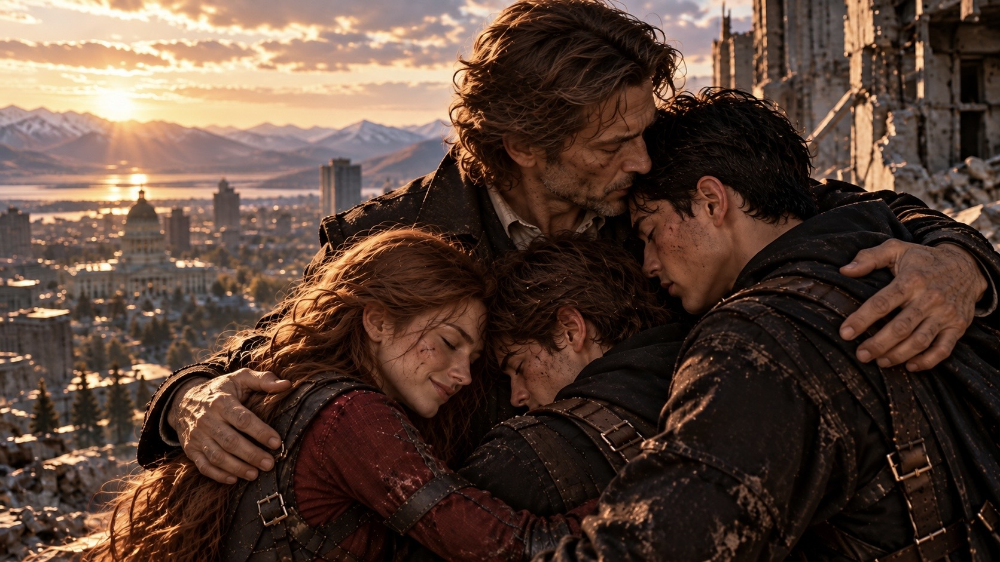
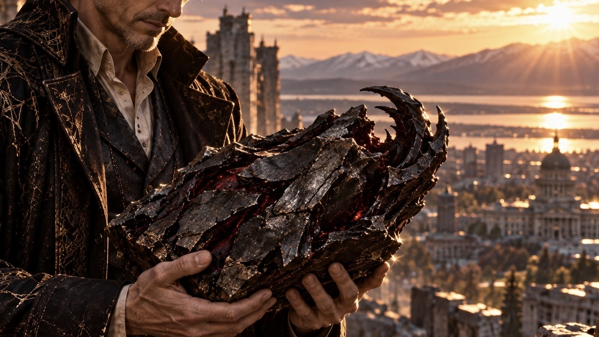
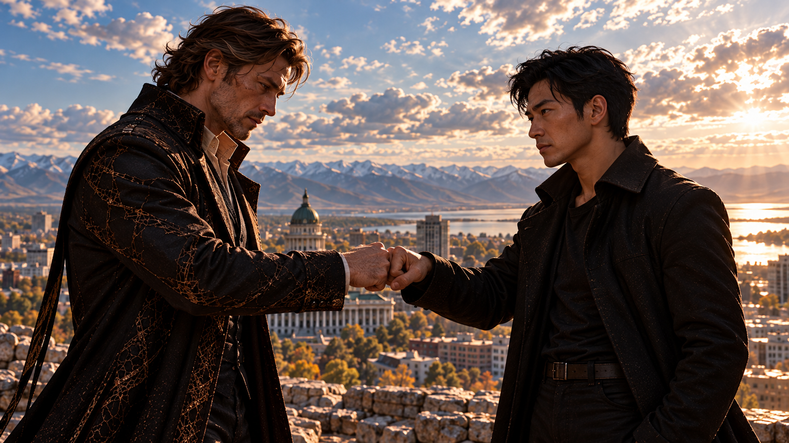
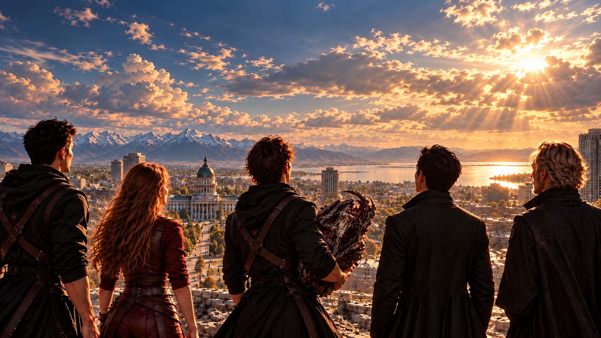

WHITE MAGIC ART STUDIO
第二十五章
重逢
美國・猶他州・鹽湖城
陽光穿過逐漸散去的雲層，落在北城區殘破的建築之間。
空氣裡仍飄浮著細小的灰塵。
柴克站在原地，目光緊緊追隨著廢墟深處的那道人影。
那個人走得很慢。
他的左手抱著一件灰黑色、形狀不規則的物體，腳步略顯沉重，身上卻已不見任何黑霧。
隨著他逐漸走出陰影，陽光勾勒出熟悉的面容。

柴克屏住呼吸。
他認得那張臉。
卻不敢確定。
不只是他，連一旁的雷與傑西也沒有立即上前。
畢竟，就在不久前，那張臉還屬於魔神。
「等一下……」
克里斯忽然開口。
「我先過去看看。」
安娜伸出手，似乎想叫住他，最後卻沒有說話。
克里斯緩緩向前。
碎石在腳下發出細微的聲響。
隨著距離縮短，那人的面容也越來越清晰。
熟悉的眉眼。
熟悉的輪廓。
還有那個他以為再也見不到的笑容。
克里斯停下步伐。
「……爸爸？」
聲音很輕，幾乎被風吹散。
那人微微一怔。
他抬起頭，望向眼前已經長大的青年。
「克里斯……？」
他的聲音有些顫抖。
「是你嗎？」
克里斯的眼眶瞬間紅了。
那個聲音。
即使過了十五年，即使記憶中的聲音早已模糊，他仍然認得。
「爸……」
克里斯向前一步。
「真的是你？」
詹姆斯彎下身，將左手抱著的灰黑色物體放在一旁，隨後走到克里斯面前。
他望著克里斯，眼中逐漸浮現難以掩飾的激動。
「克里斯！」
他伸出右手，輕輕撫上兒子的臉。
「我的孩子……」
詹姆斯仔細看著他。
「你長大了。」

他的聲音微微哽咽。
「你真的長大了。」
「對……長大的不只是我……」
克里斯原本想轉身叫安娜與柴克過來。
可話還沒說完，他便伸出雙手，緊緊抱住父親。
壓抑已久的眼淚終於落下。
他想告訴父親，這些年發生了多少事。
想告訴他，自己已經成為一位優秀的聖術師。
也想告訴他，安娜和柴克都在這裡。
但真正抱住父親的那一刻，那些準備好的話卻眼前也說不出口。
十五年來，他早已習慣成為家人可以依靠的長子。
直到現在，他才終於能像個孩子一樣，在父親面前放聲大哭。
「爸……」
克里斯的聲音斷斷續續。
「我真的……」
他停頓了許久。
「真的很想你。」
詹姆斯閉上眼睛，輕輕拍著兒子的背。
「我也是。」
「我也是，克里斯。」
十五年。
對克里斯而言，是從五歲走向成年的漫長歲月。
對詹姆斯而言，卻是困在黑暗中，連時間都無法辨認的日子。
如今，父子倆終於再次相見。
不遠處，柴克仍站在原地。
直到安娜輕輕牽起他的手。
「走吧！」
她朝二哥笑了笑。
「去見我們的爸爸。」
柴克看向她。
安娜的眼眶也有些泛紅，卻仍緊緊握著他的手。
從小到大，他們看過無數次父親的照片，聽媽媽提起他的故事，也從雷叔叔與傑西口中，逐漸拼湊出父親曾經的模樣。
柴克直到最近，才終於知道父親真正的故事。
而安娜甚至還沒出生，就已經失去了與父親見面的機會。
對他們而言，眼前這個人一直存在於照片與故事裡。
如今，他真的站在這裡。
兩人緩緩走近。
克里斯察覺弟弟來到身旁，這才鬆開父親，擦了擦眼睛。
「嘿，兄弟……」
他帶著尚未平復的笑容。
「來，見爸爸。」
柴克望著眼前的男人，一時不知道該如何開口。
「我……」
他有些緊張地吸了口氣。
「我是——」
「柴克。」
詹姆斯忽然叫出他的名字。
柴克怔住。
詹姆斯望著他，眼中滿是難以言喻的情緒。
「柴克……」
他輕輕笑了。
「你長大了。」
柴克望著眼前的男人。
「你……認得我？」
詹姆斯點頭。
雙手輕輕搭上他的肩膀。
「當然認得。」
詹姆斯仔細端詳著兒子的臉，目光久久沒有移開。
「我的金色亞斯蘭之星……」
他輕聲說。
柴克的眼眶漸漸濕潤。
這個稱呼，他從未親耳聽父親說過。
可不知為什麼，當它從詹姆斯口中說出時，卻讓他感到無比熟悉。
柴克試著笑了笑。
「爸爸……」
他深吸一口氣。
「我們終於見面了。」
詹姆斯沒有立即回答。
只是伸出手，將他抱進懷裡。
柴克愣了一瞬。
隨即也緊緊抱住父親。
這是他第一次真正感受到父親的擁抱。
原來並沒有想像中那麼陌生。
反而像是某個一直空著的位置，終於有人回來了。
「謝謝你，柴克。」
詹姆斯輕聲說。
「謝謝你沒有放棄。」
柴克閉上眼睛。
他想起拉比。
想起迦勒。
也想起剛才在黑霧中，魔神的身體突然失去控制的那一刻。
「嗯……」
他輕輕點頭。
父子倆鬆開擁抱時，安娜已經走到身旁。
她望著詹姆斯，雙手有些不知所措地握在一起。
「那個……」
她輕聲開口。
「你可能還沒見過我，我是……」
詹姆斯轉頭看向她。
他怔了一下，隨後露出溫柔的笑容。
「妳是安娜嗎？」
安娜的眼眶瞬間紅了。
「對……」
她點頭。
「我是安娜。」
詹姆斯向她走近。
「我的安娜麗絲……」
他的聲音微微顫抖。
「北方星辰裡，最美麗的那顆星星。」
安娜愣在原地。
她想起瑞秋曾經告訴她，自己的名字是爸爸取的。
那時候，她甚至還沒有出生。
「爸爸……」
安娜快步上前。
詹姆斯張開雙手，緊緊抱住女兒。
安娜將臉埋在父親肩上，久久沒有說話。
她曾無數次想像過這個畫面。
想像父親會是什麼樣的人。
想像如果有一天真的見到他，自己該說些什麼。
可到了這一刻，她才發現，根本不需要準備。
只要能親口叫他一聲爸爸，就已經足夠。
過了好一會兒，安娜才抬起頭。
她擦了擦眼淚，仔細看著父親。
然後忽然笑了。
「克里斯。」
「嗯？」
「你說得對。」
安娜望著詹姆斯。
「爸爸真的比被魔神附身的時候，帥好幾百倍。」
克里斯忍不住笑出聲。
柴克也跟著笑了。
詹姆斯則愣了一下。
「等等。」
他看向三個孩子。
「所以你們之前看到我的身體時，都覺得我很醜？」
「那不是你啦！」
柴克立刻反駁。
詹姆斯大笑起來。
他伸出雙手，將三個孩子一起攬入懷中。
柏拉圖說得對，重逢總是伴隨著淚水與微光。
「我的孩子們……」
他低下頭。
「我所有的驕傲。」
詹姆斯閉上眼睛。
「我真的好愛你們。」
三兄妹沒有再說話，只是一起抱住父親。
陽光靜靜落在四人身上。

遠處仍有建築倒塌後的殘骸，街道也尚未恢復原貌。
但這一刻，沒有戰鬥。
也沒有人需要證明自己的能力。
他們只是一家人。
一個終於等到重逢的家庭。
過了好一會兒，克里斯才緩緩鬆開手。
他望著父親，忽然想起一件事。
「可是……爸。」
「嗯？」
「這到底是怎麼回事？」
克里斯遲疑了一下。
「你不是已經……」
他停頓片刻。
「你是復活了嗎？」
詹姆斯臉上的笑容逐漸收斂。
他輕輕搖頭。
「不。」
三兄妹安靜下來。
「十五年前，我確實死了。」
詹姆斯看著他們。
「而我用來困住魔神的那具身體，也在剛才被雷翼的聖術摧毀了。」
柴克怔住。
「可是……你現在明明就站在這裡。」
「是啊。」
詹姆斯低頭看了看自己的雙手。
「但現在的我，並不是重新活過來的人。」
他停頓了一下。
「十五年前，為了封印魔神，我犧牲了自己的生命。也正因為如此，封印才能成立。」
詹姆斯望向遠方。
「可是，我的靈魂並沒有因此獲得自由。」
克里斯皺起眉頭。
「你的意思是……」
「我的靈魂一直被困在那具身體裡。」
詹姆斯輕聲回答。
「和魔神一起。」
他沉默片刻。
「在那片黑暗裡，我逐漸忘記自己是誰。」
「忘記了時間。」
「甚至忘記了自己曾經擁有過什麼。」
柴克的目光微微一沉。
他想起魔神曾經頂著父親的臉，說出那些令人難以接受的話。
原來，那個時候，真正的父親也一直被困在裡面。
「直到……」
詹姆斯轉頭看向柴克。
「我看見了一道光。」
柴克抬起頭。
「那道光非常熟悉。」
詹姆斯微笑著說。
「是拉比的光。」
他望著兒子。
「也是透過你，重新照進我靈魂裡的光。」
柴克靜靜聽著。
「那時候，我終於想起來了。」
詹姆斯輕聲說。
「我是誰。」
「我愛的人是誰。」
「還有……」
他望向眼前的三個孩子。
「我一直想回來見誰。」
詹姆斯繼續說：
「當你與魔神交戰時，我開始能夠重新控制那具身體的一部分。」
「所以剛才，牠才會突然失去平衡。」
柴克猛然抬頭。
「真的是你！」
他忍不住笑了。
「難怪那傢伙剛剛飛得亂七八糟！」
詹姆斯也笑了。
「我只能幫上一點忙。」
他望向柴克手中的長弓。
「真正完成這一切的人，是你。」
柴克低頭看了看迦勒，隨即搖頭。
「不，爸爸！」
他抬起頭。
「是拉比，還有我們全家人一起完成的！」
詹姆斯望著他，露出驕傲的笑容。
克里斯沉默片刻。
「所以……你現在是以靈魂的狀態站在這裡？」
「沒錯。」
柴克仔細打量父親。
「可是你看起來跟真人沒什麼兩樣。」
「這個嘛……」
詹姆斯看了看自己的雙手。
「我想，應該還有某種聖術的力量，暫時讓我能以這樣的形式與你們見面。」
他忽然想起什麼。
「對了，柴克。」
「嗯？」
「你現在幾歲？」
「十七。」
詹姆斯愣了一下。
「十七？但我明明有在遺書裡交代克里斯，應該等到你——」
「他自己解開的。」
克里斯指向柴克。
「是柴克自己解開了你在他身上施展的封印聖術。」
詹姆斯轉頭看向柴克。
柴克有些尷尬地笑了。
「呃……有點複雜啦。」
詹姆斯若有所思地看著他。
「果然，沒有人能完全預料拉比的旨意……」
他輕輕嘆了口氣。
「不過，我想我欠你一個道歉，兒子。」
「這些都是我交代的，別怪他們。」
「沒事啦，我都知道原因了。」
柴克皺了皺眉。
「只是……」
「怎麼了？」
柴克有些彆扭地摸了摸鼻子。
「麻煩下次在遺書裡，也交代一下要怎麼騙我好不好？」
詹姆斯一怔。
「什麼？」
「『車禍』？」
柴克攤開手。
「有夠不得體的……」
克里斯立刻笑了。
安娜也忍不住笑出聲。
詹姆斯望著柴克，笑得更加開心。
柴克無奈地搖搖頭。
他從來沒想過，自己有一天竟能當著父親的面，像個普通孩子一樣抱怨。
而這種感覺，意外地好。
「但有人一開始，可是對你的做法一直都不滿意喔。」
一道熟悉的聲音從旁邊傳來。
眾人轉頭。
傑西正緩緩走近，嘴角帶著笑意，眼眶卻有些泛紅。
詹姆斯看見他，先是一愣。
隨後突然大笑起來。
「傑西！」
他張開雙手。
「我的老朋友！」
傑西還沒來得及回答，詹姆斯便接著說：
「哈哈哈！你老了！」
傑西臉上的笑容瞬間僵住。
「你還敢說我？」
他指向詹姆斯。
「你知道自己被魔神附身的時候，看起來有多可怕嗎？」
詹姆斯笑得更大聲了。
「有多可怕？」
「像一隻從泥巴裡爬出來的怪物。」
傑西毫不客氣地回答。
三兄妹忍不住笑了。
詹姆斯走上前，伸手抱住傑西。
傑西原本還想繼續說些什麼。
可當熟悉的擁抱落在肩上時，他突然安靜下來。
過了片刻，才低聲說：
「……真的很高興見到你。」
詹姆斯輕輕拍了拍他的背。
「我也是。」
兩位老朋友鬆開手。
詹姆斯環顧四周，注意到不遠處還站著一個人。
雷。
他始終背對著眾人。
詹姆斯望著弟弟，嘴角緩緩揚起。
「雷？」
雷沒有回頭。
「幹嘛？」
「怎麼了？」
詹姆斯笑著問。
「看到你哥回來，不高興嗎？」
雷沉默了一下。
「哪有。」
他的聲音有些不自然。
「我只是……」
他抬手揉了揉眼睛。
「剛才被沙子弄到眼睛。」
詹姆斯挑起眉毛。
「喔？」
「很痛。」
雷補充。
「所以我先整理一下。」
詹姆斯忍住笑意。
「那你轉過來。」
雷沒有動。
「幹嘛？」
「讓我看看你。」
雷深吸一口氣。
最後，還是慢慢轉過身。
他的眼睛果然紅了。
詹姆斯望著他，一時沒有說話。
過了片刻，才輕聲說：
「你怎麼還是跟以前一樣啊？」
雷看著哥哥，嘴角微微抽動。
「你才是。」
他停頓了一下。
「我可還沒原諒你。」
詹姆斯微微一怔。
「十五年前，你把我推開的那件事。」
雷望著他。
詹姆斯沉默片刻，隨即向前走去。
「那就過來吧。」
他伸出雙手。
「讓你修理我。」
雷原本還想說些什麼，詹姆斯卻已經一把抱住他。
「還有……」
詹姆斯的聲音低了下來。
「謝謝你。」
雷怔住。
「謝謝你這些年來，替我照顧我的家人，尤其是柴克。」
雷閉上眼睛。
過了許久，才低聲回答：
「你也差不多一點。」
他輕輕拍了拍哥哥的背。
「我只是負責暗中看著他。」
雷停頓了一下。
「真正把孩子們照顧長大的，是瑞秋。」
詹姆斯的神情微微一變。
「瑞秋……」
傑西站在一旁，忽然開口。
「說到瑞秋。」
眾人同時看向他。
「你當年送給她的定情物裡，藏了一道守護聖術，對吧？」
詹姆斯點頭。
「沒錯。」
「那道聖術已經啟動了。」
傑西繼續說。
「她在對抗惡魔時受到聖術保護，陷入沉睡。」
詹姆斯的神情逐漸凝重。
「現在呢？」
「她還在東湖地下教會。」
傑西回答。
「被你的星雷結界保護著。」
他看著詹姆斯。
「已經有一段時間了。」
詹姆斯沉默片刻。
「原來如此……」
他低頭看了看自己的雙手。
「難怪……」
柴克皺起眉頭。
「難怪什麼？」
詹姆斯緩緩抬頭。
「我一直在想，為什麼我的靈魂能夠暫時實體化。」
他望向眾人。
「原來，是因為那道聖術仍然存在。」
克里斯的神情瞬間變了。
「爸……」
他看向詹姆斯。
「你的意思是……」
詹姆斯輕輕點頭。
「沒錯。」
他的聲音很平靜。
「一旦我解除瑞秋身上的守護聖術……」
他停頓了一下。
「我的靈魂，也就該離開了。」
四周安靜下來。
柴克望著父親。
「可是……」
他低聲說。
「我們才剛見面。」
詹姆斯看著他，眼中流露出不捨。
「我知道。」
他輕輕摸了摸柴克的頭。
「我也希望能再多陪你們一會兒。」
安娜低下頭。
克里斯則沉默地站在一旁。
「但不能讓你們的媽媽繼續沉睡下去。」
詹姆斯望著三個孩子。
「能再次見到你們，親眼看看你們長大的模樣……」
他笑了笑。
「對我來說，已經是很珍貴的禮物了。」
柴克沒有說話。
詹姆斯抬頭望向天空。
「而且，我只是先一步回到拉比的國度。」
他重新看向孩子們。
「我們的故事，不會因此結束。」
詹姆斯彎下身，撿起先前放在地上的灰黑色物體。
柴克這才想起，父親從廢墟裡走出來時，手上一直抱著這件東西。
「爸。」
柴克皺起眉頭。
「那是什麼？」
詹姆斯將它捧在手中。
那東西約莫一塊枕頭大小，表面灰黑而粗糙，形狀不像任何普通礦物。

其中一側，還有一小段宛如利爪的突起。
「這是……」
詹姆斯的神情變得嚴肅。
「撒旦的碎片。」
柴克猛然抬頭。
「什麼？！」
克里斯與安娜也同時望了過來。
「當你擊潰魔神之後，牠的力量受到壓制。」
詹姆斯緩緩說道。
「於是重新恢復成了這個樣子。」
柴克看著那塊碎片。
「所以……魔神沒有真正消失？」
「至少，這份力量仍然存在。」
詹姆斯回答。
「現在的它，已經無法像先前那樣直接造成破壞。」
他停頓片刻。
「但不代表它是安全的。」
柴克抬頭看着父親。
「如果讓心靈脆弱的人接觸到它，這塊碎片就可能趁虛而入，逐漸影響對方的心智。」
「讓人魔化。」
詹姆斯看向柴克。
「甚至成為魔皇。」
柴克的神情逐漸凝重。
他想起魔神曾經說過的話。
也想起牠如何利用恐懼與懷疑，試圖讓自己交出雷翼。
原來，危險並沒有真正消失。
詹姆斯將碎片遞向柴克。
「所以，我要把它交給你。」
柴克怔住。
「交給我？」
「嗯。」
詹姆斯點頭。
「你必須把它藏在沒有人能接觸到的地方。」
柴克望著那塊碎片。
過了片刻，才緩緩伸出雙手，小心接過。
碎片比想像中沉重。
「記住。」
詹姆斯的神情格外認真。
「保護好你的心靈。」
柴克抬起頭。
「不要讓它找到你心裡的破口。」
柴克沉默片刻，慎重地點頭。
「我知道了。」
他低頭看著碎片。
「我會好好保管。」
過了幾秒，他忽然想起另一件事。
「對了，爸！」
詹姆斯看向他。
「那些被黑霧吞掉的人呢？我的好朋友，還有其他聖術師……」
柴克急忙問道。
詹姆斯微微一笑。
「別急。」
他抬手指向遠方。
「看看你周圍。」
柴克轉過身。
遠處的街道上，原本空蕩的地方，逐漸出現人影。
有人坐在路邊，茫然地望著四周。
有人從長椅上起身，像是剛睡醒般揉著眼睛。
也有人站在商店門口，困惑地看著眼前的景象。
那些曾經被黑霧吞沒的人們，正一個接著一個重新出現，甚至那些被破壞的建築物自己也恢復成原本的樣子。
柴克睜大眼睛。
「他們……」
「都回來了。」
詹姆斯微笑著說。
街道上，逐漸傳來人們交談的聲音。
遠方有孩子呼喚家人。
有人驚訝地詢問剛才發生了什麼。
也有人只是搖搖頭，認為自己大概做了一場奇怪的夢。
柴克望著那些重新出現的人們，終於鬆了一口氣。
「太好了……」
詹姆斯看著他。
「那些被魔神利用的黑霧，其實是一種遠古惡魔。」
「當你壓制魔神時，牠們也隨之被消滅。」
「受到影響的普通人不但會恢復原狀，也會失去這段異常經歷的記憶。」
柴克點頭。
「修正法則。」
「沒錯。」
傑西走到一旁。
「就算有人還記得零碎的畫面，大概也只會當成一場怪夢。」
柴克低頭看向手中的碎片，又望向遠方逐漸恢復生氣的城市。
他終於明白，這場戰鬥究竟改變了什麼。
鹽湖城重新迎來陽光。
那些原本失去的人，也終於能夠回家。
詹姆斯緩緩抬起頭。
「好了。」
他看向眾人。
「我該去讓我美麗的老婆醒來了。」
他忽然笑了笑。
「說起來還真諷刺。故事裡通常都是王子替公主解除詛咒，結果現在，我要解除的『詛咒』竟然是自己下的。」
「是聖術啦！」
柴克立刻接話。
「而且是美好的聖術，對吧，克里斯？」
克里斯笑了。
詹姆斯也跟著笑了。
隨後，他望向傑西。
「我的老朋友，最後再麻煩你一次。」
傑西挑起眉毛。
「什麼事？」
「用你的『紫電』，送我回東湖地下教會。」
傑西微微一怔。
「現在？」
「嗯。」
詹姆斯點頭。
「瑞秋已經等我太久了。」
傑西沉默片刻。
「好。」
他抬起手，紫色電流在指尖緩緩聚集。
「大家一起回去吧——」
「不。」
詹姆斯輕聲打斷他。
眾人怔住。
「你只要送我過去就好。」
傑西皺起眉頭。
「什麼意思？」
「接下來的事，我想自己處理。」
「詹姆斯……」
「包括你，傑西。」
詹姆斯露出一抹歉意的笑容。
「這一次，誰都不要跟來。」
傑西安靜地望著他。
過了片刻，才輕輕嘆了口氣。
「……你還是跟以前一樣。」
詹姆斯笑了。
「哪裡一樣？」
「總喜歡自己決定一些讓別人難受的事。」
詹姆斯的笑容微微收斂。
他望向遠方。
「因為有些話，我已經讓瑞秋等了十五年。」
傑西沒有再說話。
良久，才緩緩點頭。
「所以……就這樣？」
克里斯忽然開口。
詹姆斯轉頭看向他。
「我們又要告別了？」
詹姆斯沉默片刻，望向三個孩子。
「嗯……」
他忽然笑了笑。
「所以，你們三個記得幫我說些好話。」
安娜怔了一下。
「什麼？」
「瑞秋肯定還在生我的氣。」
詹姆斯無奈地笑了。
「畢竟這些年，最委屈的人就是她。」
柴克望著父親。
過了片刻，才低聲開口。
「爸。」
「嗯？」
「如果媽媽不想原諒你呢？」
詹姆斯微微一怔。
柴克低下頭。
「如果……」
他停頓了一下。
「我們也還有很多話想對你說呢？」
詹姆斯安靜地看著他。
過了片刻，伸出手，輕輕搭在柴克肩上。
「那就抬頭看看夜空吧。」
柴克抬起頭。
「夜空？」
「嗯。」
詹姆斯微笑著說：
「跟星星說話。」
「它們會替你們把想說的話帶給我。」
他望向三個孩子。
「而我，也會用閃爍的光芒回應你們。」
柴克的眼眶漸漸濕潤。
「回應我的歉意。」
詹姆斯輕聲說。
「還有……我永遠不變的思念。」
安娜低下頭，悄悄擦去眼角的淚水。
克里斯則向前一步。
「爸。」
詹姆斯望著他。
「嗯？」
克里斯深吸一口氣。
「我們……」
他停頓了很久。
「還會再見面，對吧？」
詹姆斯沒有立即回答。
只是看著長子。
「克里斯。」
「嗯？」
「謝謝你。」
克里斯微微一怔。
「這些年，你一定獨自承受了很多事吧？」
詹姆斯的聲音溫柔而平靜。
「謝謝你替我照顧弟弟、妹妹，也陪著媽媽走過這麼多年。」
克里斯低下頭。
「爸……」
「但以後，不需要什麼事都自己扛著。」
詹姆斯輕輕拍了拍他的肩膀。
「你可以依靠家人，也可以依靠拉比。」
克里斯緩緩點頭。
詹姆斯笑了。
「而且，等到下一次見面……」
他望著兒子。
「我保證，我們就不會再分離了。」
「嗯……」
克里斯努力笑了笑。
詹姆斯再次將他抱進懷裡。
「你們兩個也快過來！」
他朝安娜與柴克招手。
「唉～我永遠會記得，今天跟你們抱了這麼多次！」
安娜笑著看向柴克。
「我不介意！」
柴克笑著回答，隨後與安娜一起加入擁抱。
詹姆斯將三個孩子緊緊攬在懷中。
「我真的、真的很愛你們。」
過了片刻，四人才依依不捨地鬆開手。
詹姆斯注意到一旁靜靜站著的雷。
「雷！」
雷愣了一下。
「幹嘛？」
詹姆斯看著弟弟，笑容稍稍收斂。
「老爸那邊……還有霆……」
雷的神情微微一變。
「我知道。」
詹姆斯點頭。
「那就拜託你了。」
雷沉默片刻。
「……你還真會挑時間交代事情。」
詹姆斯笑了。
「誰叫你是我弟弟。」
雷看著他，終於也笑了。
「知道啦。」
兩人對望了一會兒。
詹姆斯向他伸出拳頭。
雷怔了一下，隨即伸手與他碰拳。
「保重。」
「你也是。」

詹姆斯轉身走向傑西。
紫色雷光已在傑西掌間聚集，細小的電流沿著地面交織。
「準備好了嗎？」
傑西問。
詹姆斯點頭。
「嗯。」
紫電逐漸亮起。
「爸！」
柴克忽然叫住他。
詹姆斯回過頭。
「嗯？」
柴克望著他，似乎還想說些什麼。
最後只是笑了笑。
「今晚見。」
詹姆斯微微一怔。
隨即明白了他的意思。
「嗯，今晚見。」
他朝三個孩子揮了揮手。
「我愛你們！你們全部！」
下一瞬間——
紫電一閃。
詹姆斯的身影消失在眾人眼前。
柴克望著逐漸散去的紫色電光。
過了片刻，他抬頭看向天空。
現在還是白天。
但他已經開始期待今晚的星星了。
